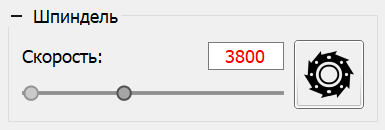

На панели управления шпинделем расположены:
Скорость вращения может задаваться как вводом числа в соответствующее поле, так и с помощью ползунка.
Текст в поле ввода может иметь два цвета: черный в случае, если текущая скорость вращения шпинделя соответствует заданной; красный - в противном случае.
Во время передачи УП в контроллер скорость вращения может быть изменена с помощью вышеуказанных элементов управления, при этом используются инжектированные G-код команды "S", или с помощью функции переопределения скорости панели "Коррекция". Включение/выключение шпинделя во время передачи возможно только при переводе контроллера в режим удерживания.